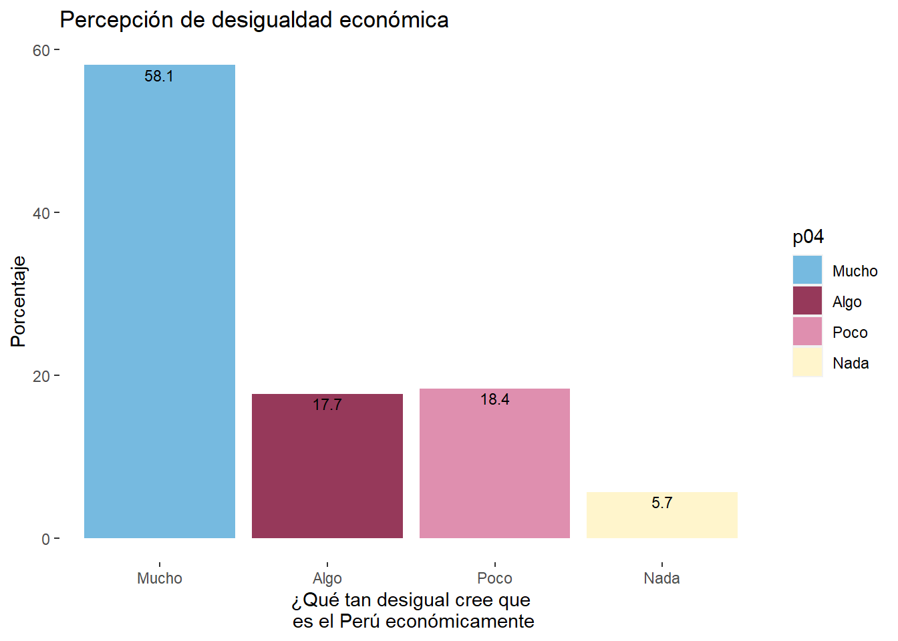
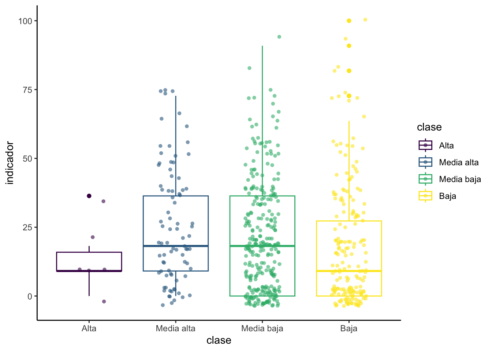
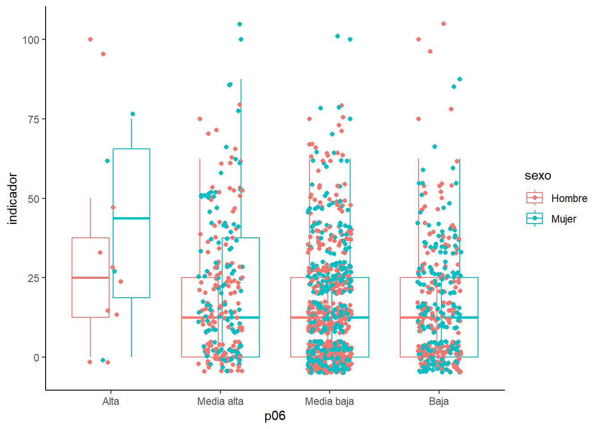

Práctica dirigida 2

FACULTAD DE CIENCIAS SOCIALES - PUCP
Curso: POL 278 - Estadística para el análisis político 1 | Semestre
2024 - 1
1.¿Qué es el análisis descriptivo?

2.Nivel de medida de una variable

3.Importancia de visualización de datos
Debido al crecimiento de la big data en los últimos años surgieron nuevas necesidades para comprender los análisis masivos de datos de una forma simple y escalable. Es entonces cuando se dirige la atención a desarrollar nuevas técnicas gráficas en distintas plataformas (ejemplos a continuación), tanto softwares como librerías de código abierto1, tal es el caso de ggplot2 en R.

Este interés por desarrollar técnicas de análisis masivo de datos y la comunicación de resultados cada vez más amigables y apta para todos los públicos dio pie a nuevas especialidades dentro de la ciencia de datos, como por ejemplo el data story telling

Gráficos por tipo de variables:

4.Análisis descriptivo
¿Cuál es la percepción de desigualdad en el Perú el 2022? 🤔
Para dar respuesta a la pregunta de investigación que guiara la práctica dirigida analizaremos algunas de las variables que forman parte de la Encuesta Nacional de Percepción de Desigualdades - ENADES 2022, que fue elaborada por Instituto de Estudios Peruanos (IEP) y Oxfam. La encuesta busca ahondar en la percepción de las diferentes formas de desigualdad en el Perú e incorpora indicadores que permiten medir la magnitud de brechas sociales y políticas como género, clase, entre otros.

library(rio) #Convocamos el paquete
data=import("ENADES_2022_final.dta")
df = data[, c("edad", "sexo", "zona1", "p03_1", "p04", "p05", "p06", "p11_1", "p11_2", "p11_3", "p11_4", "p13" )]
str(df)## 'data.frame': 1530 obs. of 12 variables:
## $ edad : num 49 60 24 32 64 19 41 54 23 19 ...
## ..- attr(*, "label")= chr "D01. ¿Qué edad tiene usted?"
## ..- attr(*, "format.stata")= chr "%12.0g"
## $ sexo : num 1 1 1 2 1 1 1 1 2 1 ...
## ..- attr(*, "label")= chr "D02. SEXO del encuestado"
## ..- attr(*, "format.stata")= chr "%12.0g"
## ..- attr(*, "labels")= Named num [1:3] 1 2 3
## .. ..- attr(*, "names")= chr [1:3] "Hombre" "Mujer" "Otro"
## $ zona1: num 1 1 4 2 4 2 3 2 2 5 ...
## ..- attr(*, "label")= chr "D06. Macrozona"
## ..- attr(*, "format.stata")= chr "%12.0g"
## ..- attr(*, "labels")= Named num [1:5] 1 2 3 4 5
## .. ..- attr(*, "names")= chr [1:5] "Lima Metropolitana" "Norte" "Centro" "Sur" ...
## $ p03_1: num 5 3 5 5 10 10 2 2 1 8 ...
## ..- attr(*, "label")= chr "P03.1 En una escala de 1 a 10, donde 1 significa “Muy en desacuerdo” y 10 signif"
## ..- attr(*, "format.stata")= chr "%12.0g"
## ..- attr(*, "labels")= Named num [1:11] 1 2 3 4 5 6 7 8 9 10 ...
## .. ..- attr(*, "names")= chr [1:11] "1 Muy en desacuerdo" "2" "3" "4" ...
## $ p04 : num 3 1 99 1 3 1 1 1 1 2 ...
## ..- attr(*, "label")= chr "P04. ¿Qué tan desigual cree que es el Perú económicamente?"
## ..- attr(*, "format.stata")= chr "%12.0g"
## ..- attr(*, "labels")= Named num [1:5] 1 2 3 4 99
## .. ..- attr(*, "names")= chr [1:5] "Mucho" "Algo" "Poco" "Nada" ...
## $ p05 : num 3 1 1 1 1 1 1 1 1 1 ...
## ..- attr(*, "label")= chr "P05. En los últimos dos años, ¿cree que la diferencia entre ricos y pobres en el"
## ..- attr(*, "format.stata")= chr "%12.0g"
## ..- attr(*, "labels")= Named num [1:4] 1 2 3 99
## .. ..- attr(*, "names")= chr [1:4] "Ha aumentado" "Se mantiene igual" "Ha disminuido" "NS/NP"
## $ p06 : num 2 2 4 3 2 2 2 3 4 3 ...
## ..- attr(*, "label")= chr "P06. ¿Usted se describiría a sí mismo(a) como perteneciente a la clase…?"
## ..- attr(*, "format.stata")= chr "%12.0g"
## ..- attr(*, "labels")= Named num [1:6] 1 2 3 4 91 99
## .. ..- attr(*, "names")= chr [1:6] "Alta" "Media alta" "Media baja" "Baja" ...
## $ p11_1: num 2 2 2 1 2 1 2 2 1 1 ...
## ..- attr(*, "label")= chr "P11.1 ¿Qué tan desigual es el acceso de los peruanos a la educación?"
## ..- attr(*, "format.stata")= chr "%12.0g"
## ..- attr(*, "labels")= Named num [1:4] 1 2 3 99
## .. ..- attr(*, "names")= chr [1:4] "Muy desigual" "Poco desigual" "Nada desigual" "NS/NP"
## $ p11_2: num 1 1 2 1 2 1 1 1 2 1 ...
## ..- attr(*, "label")= chr "P11.2 ¿Qué tan desigual es el acceso de los peruanos a la salud?"
## ..- attr(*, "format.stata")= chr "%12.0g"
## ..- attr(*, "labels")= Named num [1:4] 1 2 3 99
## .. ..- attr(*, "names")= chr [1:4] "Muy desigual" "Poco desigual" "Nada desigual" "NS/NP"
## $ p11_3: num 2 1 2 1 2 1 1 1 2 1 ...
## ..- attr(*, "label")= chr "P11.3 ¿Qué tan desigual es el acceso de los peruanos al trabajo?"
## ..- attr(*, "format.stata")= chr "%12.0g"
## ..- attr(*, "labels")= Named num [1:4] 1 2 3 99
## .. ..- attr(*, "names")= chr [1:4] "Muy desigual" "Poco desigual" "Nada desigual" "NS/NP"
## $ p11_4: num 1 1 1 1 2 1 1 1 2 2 ...
## ..- attr(*, "label")= chr "P11.4 ¿Qué tan desigual es el acceso de los peruanos a la justicia?"
## ..- attr(*, "format.stata")= chr "%12.0g"
## ..- attr(*, "labels")= Named num [1:4] 1 2 3 99
## .. ..- attr(*, "names")= chr [1:4] "Muy desigual" "Poco desigual" "Nada desigual" "NS/NP"
## $ p13 : num 1 2 2 1 2 1 2 99 1 2 ...
## ..- attr(*, "label")= chr "P13. En situaciones de crisis económica ¿está de acuerdo o en desacuerdo con que"
## ..- attr(*, "format.stata")= chr "%12.0g"
## ..- attr(*, "labels")= Named num [1:3] 1 2 99
## .. ..- attr(*, "names")= chr [1:3] "De acuerdo" "En desacuerdo" "NS/NP"names(df) #revisamos las variables## [1] "edad" "sexo" "zona1" "p03_1" "p04" "p05" "p06" "p11_1" "p11_2"
## [10] "p11_3" "p11_4" "p13"4.1 ¿Cuál es el porcentaje de percepción de desigualdad económica en el Perú?
Usaremos la variable P04:
¿Qué tan desigual cree que es el Perú económicamente?
De acuerdo al diccionario de datos encontramos cuatro posibles respuestas
1:Mucho
2:Algo
3:Poco
4:Nada
Análisis de una variable ordinal
Pasos para analizar una variable ordinal A. Identificar el tipo de variable (str, class) B. Convertimos la variable al tipo de dato que necesitamos dependiendo el caso C. Elaboramos un objeto que nos permita ver preliminarmente los datos de la variable. D. Elaboramos un gráfico que vaya acorde a la variable ordinal (gráfico de barras)
library(dplyr) #Convocamos el paquete##
## Attaching package: 'dplyr'## The following objects are masked from 'package:stats':
##
## filter, lag## The following objects are masked from 'package:base':
##
## intersect, setdiff, setequal, union#comprobamos el tipo de dato que analizaremos
class(df$p04)## [1] "numeric"Del diccionario de datos, sabemos que esta variable es ordinal, revisemos si los niveles tienen coherencia con las respuestas recogidas en la encuesta.
table(df$p04) #Veamos los niveles de la variable##
## 1 2 3 4 99
## 868 265 275 85 37💥 Otorguemosle etiquetas y categorizemosla como factor:
df = df %>%
mutate(p04 = factor(p04, levels = 1:4, labels = c("Mucho", "Algo", "Poco", "Nada"), ordered = TRUE))Revisemos que el cambio se haya realizado correctamente usando el
comando summarise del paquete dplyr
df %>%
group_by(p04) %>%
summarise(Freq=n())## # A tibble: 5 × 2
## p04 Freq
## <ord> <int>
## 1 Mucho 868
## 2 Algo 265
## 3 Poco 275
## 4 Nada 85
## 5 <NA> 37df <- na.omit(df)A primera vista, la tabla nos indica que la mayoría de los encuestados (818) opina que hay mucha desigualdad económica en el país. Pero, ¿cuánto sería dicho resultado en porcentaje?
Podemos realizar una tabla de frecuencias y porcentajes agregando una
linea al comando anterior. Asimismo, para poder graficar los resultados
de las tablas, tendremos que almacenarlas en un objeto. Trabajemos con
esta tabla resumen y asignemosle el nombre
para_grafico para posteriormente llamarla al
graficar.
para_grafico=df %>%
group_by(p04) %>%
summarize(Freq=n()) %>%
mutate(Porcentaje = (Freq / sum(Freq))*100)
para_grafico## # A tibble: 4 × 3
## p04 Freq Porcentaje
## <ord> <int> <dbl>
## 1 Mucho 868 58.1
## 2 Algo 265 17.7
## 3 Poco 275 18.4
## 4 Nada 85 5.69Afirmamos que más del 50% de los encuestados percibe que el país es muy desigual económicamente.
También podemos analizar cómo cambia esto si solo seleccionamos los casos de los encuestados/as menores de 30 años.
df %>%
filter(edad<30)%>%
group_by(p04) %>%
summarize(Freq=n()) %>%
mutate(Porcentaje = (Freq / sum(Freq))*100)## # A tibble: 4 × 3
## p04 Freq Porcentaje
## <ord> <int> <dbl>
## 1 Mucho 278 60.8
## 2 Algo 98 21.4
## 3 Poco 73 16.0
## 4 Nada 8 1.75Grafiquemos los resultados con ggplot2
Nuestra variable es categórica, por lo tanto realizaremos el gráfico acorde:
library(ggplot2)
library(taylor) #opcional (una ventaja de que R sea software libre)
ggplot(para_grafico, aes(x=p04, y=Porcentaje, fill=p04)) +
geom_bar(stat = "identity") 
Este es un gráfico básico, pero podemos personalizarlo según nuestros gustos.
ggplot(para_grafico, aes(x=p04, y=Porcentaje, fill=p04)) +
geom_bar(stat = "identity") +
ggtitle("Percepción de desigualdad económica") +
xlab("¿Qué tan desigual cree que\n es el Perú económicamente") + ylab("Porcentaje")+
geom_text(aes(label=round(Porcentaje,1)), vjust=1.30, color="black", size=3)+
theme(panel.background=element_rect(fill = "white", colour = "white")) +
scale_fill_taylor_d(album="Lover") #"Fearless (Taylor's Version)"
El ejercicio de análisis descriptivo con variables numéricas lo realizaremos con un indicador aditivo que crearemos a continuación.
4.2 ¿Cuál es la percepción de la desigualdad en calidad de vida en el Perú?
Indicador Proxy
También llamado indicador indirecto, se usa ante la imposibilidad de medir lo que efectivamente es de importancia. El indicador mide una variable distinta a la que nos interesa de manera específica, pero presenta una relación lo más directa posible con el fenómeno en estudio.
Un indicador proxy es una medición o señal indirecto que aproxima o representa un fenómeno en la ausencia de una medición o señal directo.
Indicador Aditivo
Pasos para construir un indicador:
- Verificar que las variables que construyan el indicador correspondan al concepto que se desea medir. Ejemplo: Si deseo mejor Satisfacción del Usuario, las preguntas deben ser sobre ello.
- Revisar el cuestionario e identificar el sentido de las categorías. Ejemplo: El valor 5 es “Muy instafisfecho” y 1 “Muy satisfecho”
- Si las categorías de las variables están en el correcto sentido proceder a sumarlas, si no lo están, proceder a recodificarlas para luego sumar.
- Una vez realizada la suma, identificar el mínimo y el máximo.
- Restar el valor mínimo a la suma de todos los valores.
- Al resultado de lo anterior, dividir por el nuevo máximo menos el mínimo, con ello, se va a obtener valores entre 0 y 1.
- Multiplicar por 100 si se desea el índice de 0 a 100, o por 10 si se desea el índice de 0 a 10.
Construiremos un indicador aditivos de percepción de desigualdad en
calidad de vida en el Perú, que vaya del 0 al 100. Para ello usaremos a
las variables d_educ, d_salud,
d_trabajo y d_justicia, junto a sus respuestas
tres respuestas:
1: Nada desigual
2: Poco desigual
3: Muy desigual
El indicador que queremos crear es de percepción de desigualdad, por tanto mayor valor debería significar mayor desigualdad.
🗨️ Para poder crear el indicador, necesitamos que todas las variables a usar sean numéricas porque las tendremos que sumar.
df = df %>%
mutate(p11_1 = factor(p11_1, levels = 1:3, labels = c("Nada desigual", "Poco desigual", "Muy desigual"), ordered = TRUE)) %>%
mutate(p11_2 = factor(p11_2, levels = 1:3, labels = c("Nada desigual", "Poco desigual", "Muy desigual"), ordered = TRUE)) %>%
mutate(p11_3 = factor(p11_3, levels = 1:3, labels = c("Nada desigual", "Poco desigual", "Muy desigual"), ordered = TRUE)) %>%
mutate(p11_4 = factor(p11_4, levels = 1:3, labels = c("Nada desigual", "Poco desigual", "Muy desigual"), ordered = TRUE))
str(df) ## 'data.frame': 1493 obs. of 12 variables:
## $ edad : num 49 60 32 64 19 41 54 23 19 20 ...
## $ sexo : num 1 1 2 1 1 1 1 2 1 1 ...
## $ zona1: num 1 1 2 4 2 3 2 2 5 5 ...
## $ p03_1: num 5 3 5 10 10 2 2 1 8 10 ...
## $ p04 : Ord.factor w/ 4 levels "Mucho"<"Algo"<..: 3 1 1 3 1 1 1 1 2 2 ...
## $ p05 : num 3 1 1 1 1 1 1 1 1 3 ...
## $ p06 : num 2 2 3 2 2 2 3 4 3 2 ...
## $ p11_1: Ord.factor w/ 3 levels "Nada desigual"<..: 2 2 1 2 1 2 2 1 1 2 ...
## $ p11_2: Ord.factor w/ 3 levels "Nada desigual"<..: 1 1 1 2 1 1 1 2 1 2 ...
## $ p11_3: Ord.factor w/ 3 levels "Nada desigual"<..: 2 1 1 2 1 1 1 2 1 2 ...
## $ p11_4: Ord.factor w/ 3 levels "Nada desigual"<..: 1 1 1 2 1 1 1 2 2 3 ...
## $ p13 : num 1 2 1 2 1 2 99 1 2 1 ...
## - attr(*, "na.action")= 'omit' Named int [1:37] 3 47 59 87 152 282 330 380 406 458 ...
## ..- attr(*, "names")= chr [1:37] "3" "47" "59" "87" ...df <- na.omit(df)table(df$p11_1)##
## Nada desigual Poco desigual Muy desigual
## 882 470 72Recategorizemos nuestras variables a numéricas:
names(df)## [1] "edad" "sexo" "zona1" "p03_1" "p04" "p05" "p06" "p11_1" "p11_2"
## [10] "p11_3" "p11_4" "p13"df[8:11] <- lapply(df[8:11], as.numeric) #podemos usar lapply para recodificar más de una variable a la vez
#ejemplo usando dplyr: data = data %>% mutate(across(7:10, as.numeric))Recordemos los pasos para crear un índice aditivo:
*((var_suma - mín_de_suma)/(máx_de_suma-mín de suma)))\*valor al que quiere que llegue el índice(si va del 0 al 10 será 10, del 0 al 50 será 50, etc).*df=df %>%
mutate(suma = p11_1 + p11_2 + p11_3 + p11_4)Revisamos mínimo y máximo
summary(df$suma)## Min. 1st Qu. Median Mean 3rd Qu. Max.
## 4.000 4.000 5.000 5.354 6.000 12.000df= df %>%
mutate(indicador = ((suma-4)/(12-4))*100) #Como queremos que el indicador vaya del 0 al 100, lo multiplicamos por 1004.3 ¿Cuál es la diferencia de la percepción de desigualdad entre mujeres y hombres? 🤔
Ahora, veamos algunas medidas de tendencia central, distribución y
dispersión para el caso de variables numéricas. Trabajaremos con el
indicador que acabamos de crear: indicador
Exploremos la variable. Veamos medidas de tendencia central y de dispersión. Recordemos que va del 0 al 100.
df%>%
summarise(Media = mean(indicador),
Mediana = median(indicador),
Desviacion = sd(indicador),
Minimo = min(indicador),
Maximo = max(indicador))## Media Mediana Desviacion Minimo Maximo
## 1 16.92416 12.5 18.63212 0 100Podemos analizar la respuesta según el sexo de los encuestados
df = df %>%
mutate(sexo = factor(sexo, levels = 1:2, labels = c("Hombre","Mujer")))df %>%
group_by(sexo) %>%
summarise(Media=mean(indicador)) ## # A tibble: 2 × 2
## sexo Media
## <fct> <dbl>
## 1 Hombre 17.2
## 2 Mujer 16.6La tabla nos indica que las encuestadas mujeres perciben ligeramente una mayor desigualdad en los derechos y servicios, a comparación de los hombres.
Podemos visualizarlo mejor con un gráfico
ggplot(df, aes(x=sexo, y=indicador, color=sexo)) +
geom_boxplot() +
geom_jitter(shape=16, position=position_jitter(0.2)) +#para agregar los casos como puntos
theme_classic()
➡️ Análisis: Como podemos ver en el gráfico la disperción de los datos es muy similar en el grupo de hombre y mujeres. Los valores atípicos (outliers) se muestran como puntos individuales fuera de la caja. La línea que vemos dentro de la caja nos señala la mediana, al comparar las dos líneas se aprecia que la mediana es similar.
En resumen, el boxplot es herramienta gráfica que
proporciona un resumen visual de la distribución de un conjunto de
datos, mostrando la mediana, los cuartiles, los valores atípicos y la
variabilidad de los datos.
table (df$p06)##
## 1 2 3 4 91 99
## 13 243 755 374 9 30df = df %>%
mutate(p06 = factor(p06, levels = 1:4, labels = c("Alta", "Media alta", "Media baja", "Baja"), ordered = TRUE))df <- na.omit(df)ggplot(df, aes(x=p06, y=indicador, color=sexo)) +
geom_boxplot() +
geom_jitter(shape=16, position=position_jitter(0.2)) +#para agregar los casos como puntos
theme_classic()
Ejercicio para casa: Analice descriptivos y elabore el gráfico correspondiente para la variable p03_1